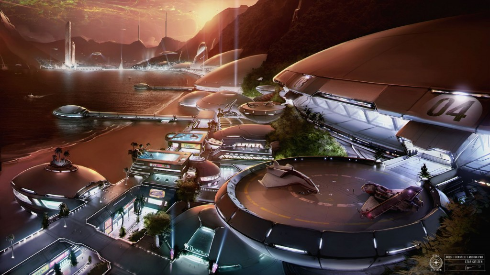

SYSTEM: GOSS

Excurs - System: Goss
Das Goss System ist der Inbegriff von natürlicher Schönheit im großen Stil. An der Spitze eines massiven Emissionsnebels, nahe des Olympus Pools gelegen, ist dieses Doppelsternsystem so erstaunlich anders als alles andere im Raum, sodass die frühen Entdecker nicht glauben konnten, was sie da sahen. Massive Bänder aus Türkis , Gold und starkem Orange sind in leuchtenden Mustern aus jeder Perspektive am Himmel zu sehen. Ein sich haltendes, aber nicht belegbares Gerücht besagt, dass das System seinen Namen vom überraschten Ausdruck seines Entdeckers erhalten hat: „Gosh“. Reisende sollten gewarnt sein, diese Anekdote nicht in der Gegenwart von Gossianern wiederholen, denn sie betrachten dies als die ultimative Beleidigung und es ist Grund genug für sie, eine Schlägerei anzufangen.
Wie der Grand Canyon auf der Erde oder die Magnet Ridge auf Terra, ist Goss in erster Linie ein touristisches Ziel. Goss wurde zunächst durch viele naturalistische, religiöse Gruppen besiedelt, welche wahrscheinlich aufgrund der majestätischen Nebel des Systems glaubten, besser mit ihren Gottheiten kommunizieren zu können. Als Ergebnis ist die Bevölkerung heute stolz auf ihre Selbstgenügsamkeit, da sie auch ihre eigenen Waren nur mit wenig Überschuss erzeugen. Für Großhändler ist Goss somit kein beliebter Platz.
Aus diesem Grund waren die Beobachter entrüstet, als das UEE Chronos plötzlich für die reine Regierungsnutzung und -entwicklung beanspruchte. Als die militärischen Schiffe begannen, das leere System immer wieder anzufliegen, kamen neugierige Fragen aus der Öffentlichkeit darüber auf, was wirklich in Chronos vor sich ging. Über Jahre hinweg kursierten teilweise einfallslose („Doomsday Vorrichtung“), teilweise einfallsreiche („unsichtbare Raumstationen“) Theorien im UEE-Raum. Eine leidenschaftliche Verschwörungstheoretikerin ging angeblich sogar so weit, als blinder Passagier auf einem militärischen Transporter zu reisen, der auf dem Weg zu dem System war. Als sie später behauptete, dass dort nichts versteckt werde, verärgerte ihre Unfähigkeit, irgendetwas Skandalöses aufzudecken, ihre Theoretikerkollegen und befeuerte damit nur weiter die Spekulationen.
Kleine Händler sind hingegen gefragter. Zwischen handgefertigten Waren von Gossianern, Bergen von touristischem Schnickschnack und den seltenen, heimischen Lebensformen des Systems, gibt es viele Hightech-Waren in kleinen Mengen. Es ist eine großartige Möglichkeit für einen Aurora- oder einen 300i-Pilot mit kleinem Laderaum, die Urlaubskasse aufzufüllen. Oder die Möglichkeit für einen Piloten, sich außerhalb des Gesetzes zu bewegen, um ziemlich viel Gewinn zu machen.
Die UEE Militärs nutzen Goss regelmäßig als Anlaufstelle für Landurlaub. Zivilisten würden gut daran tun, die Nachtclubs und anderen Hotspots auf Cassel zu meiden, wenn sich eine UEE-Trägergruppe in der Umlaufbahn befindet: Die Soldaten, welche den Planeten besuchen, sind meist acht bis zwölf Monate ohne Erholung gewesen und wollen auf dem Planeten eine gute Zeit verbringen.
Auf Goss III gibt es außerdem auch einen großen militärischen Krankenhaus-Komplex, in dem verwundete Soldaten aus dem Kampf mit den Vanduul behandelt werden.
Cassel ist aber auch die Heimat einer der komplexesten Wasser-Ökosphären der Galaxie. Mit tausenden bekannten Spezies, welche in der Tiefe lauern, sind Cassels Meere ein unvergesslicher Anblick. Auch wenn Angeln immer noch ein beliebter Zeitvertreib ist, hat der Gouverneursrat Regulationen und Begrenzungen eingeführt, um die Ressourcen der Welt zu schützen und Wilderer abzuschrecken, welche die Gewässer auf der Suche nach Profit durchqueren.

„Ich erinnere mich mehr an viel von Goss, aber ich weiß, dass ich eine verdammt gute Zeit hatte.“ – Starman Lenny Carmichael, Auszug aus Letters Home: Eine Sammlung von Comms, 2867
Wie der Grand Canyon auf der Erde oder die Magnet Ridge auf Terra, ist Goss in erster Linie ein touristisches Ziel. Goss wurde zunächst durch viele naturalistische, religiöse Gruppen besiedelt, welche wahrscheinlich aufgrund der majestätischen Nebel des Systems glaubten, besser mit ihren Gottheiten kommunizieren zu können. Als Ergebnis ist die Bevölkerung heute stolz auf ihre Selbstgenügsamkeit, da sie auch ihre eigenen Waren nur mit wenig Überschuss erzeugen. Für Großhändler ist Goss somit kein beliebter Platz.
Aus diesem Grund waren die Beobachter entrüstet, als das UEE Chronos plötzlich für die reine Regierungsnutzung und -entwicklung beanspruchte. Als die militärischen Schiffe begannen, das leere System immer wieder anzufliegen, kamen neugierige Fragen aus der Öffentlichkeit darüber auf, was wirklich in Chronos vor sich ging. Über Jahre hinweg kursierten teilweise einfallslose („Doomsday Vorrichtung“), teilweise einfallsreiche („unsichtbare Raumstationen“) Theorien im UEE-Raum. Eine leidenschaftliche Verschwörungstheoretikerin ging angeblich sogar so weit, als blinder Passagier auf einem militärischen Transporter zu reisen, der auf dem Weg zu dem System war. Als sie später behauptete, dass dort nichts versteckt werde, verärgerte ihre Unfähigkeit, irgendetwas Skandalöses aufzudecken, ihre Theoretikerkollegen und befeuerte damit nur weiter die Spekulationen.
Kleine Händler sind hingegen gefragter. Zwischen handgefertigten Waren von Gossianern, Bergen von touristischem Schnickschnack und den seltenen, heimischen Lebensformen des Systems, gibt es viele Hightech-Waren in kleinen Mengen. Es ist eine großartige Möglichkeit für einen Aurora- oder einen 300i-Pilot mit kleinem Laderaum, die Urlaubskasse aufzufüllen. Oder die Möglichkeit für einen Piloten, sich außerhalb des Gesetzes zu bewegen, um ziemlich viel Gewinn zu machen.
Die UEE Militärs nutzen Goss regelmäßig als Anlaufstelle für Landurlaub. Zivilisten würden gut daran tun, die Nachtclubs und anderen Hotspots auf Cassel zu meiden, wenn sich eine UEE-Trägergruppe in der Umlaufbahn befindet: Die Soldaten, welche den Planeten besuchen, sind meist acht bis zwölf Monate ohne Erholung gewesen und wollen auf dem Planeten eine gute Zeit verbringen.
Auf Goss III gibt es außerdem auch einen großen militärischen Krankenhaus-Komplex, in dem verwundete Soldaten aus dem Kampf mit den Vanduul behandelt werden.
Goss I
Der innerste Planet von Goss ist eine reiche Welt und die Kornkammer des Systems. Von mineralreichen Bergketten über endlose Felder für die Landwirtschaft, produziert Goss I 98 Prozent der erforderlichen Rohstoffe für die Einwohner und Touristen des Systems. Es gibt kaum Handel mit äußeren Systemen, da sämtliche, auf Goss I produzierten Waren in die anderen beiden Welten abtransportiert werden. Deshalb gibt es eine große Nachfrage von Piloten, welche diese Kurzstrecken fliegen, obwohl der Verdienst wie auch die Abwechslung recht gering sind. Sämtlicher Grund und Boden gehört den Einheimischen und durch strenge Gesetze wird die Ansiedlung von externen Unternehmen sehr erschwert. Anders als die meisten anderen erfolgreichen Biosphären besitzt Goss I fast keinen Ozean. Der größte Wasservorrat, in etwa der Größe des Mittelmeeres auf der Erde, ist gefüllt mit stillem Wasser, das fast völlig frei von Leben ist. Eine Art von Moos bedeckte Garnelen ist die einsame Ausnahme. Versuche, einige der vielfältigen Lebensformen aus Cassel oder von anderswo im Reich einzuführen, haben bisher nicht funktioniert. Die Gründe, aufgrund derer sich im Wasser kein Leben entwickelt, sind noch unbekannt.Goss II (Cassel)
Cassel (gesprochen: „Cas-séll“, niemals „Castle“, da dies eine häufig falsch genutzt Aussprache ist, welche die Eingeborenen reizt) ist die Hauptwelt des Goss Systemes und das ultimative Ziel von Hunderten Millionen Touristen jedes Jahr. Im Gegensatz zu Goss I beherbergt Cassel eine schöne Ozeanwelt. 85 Prozent der Welt besteht aus lebendigen, mit Leben gefüllten Ozeanen und der Rest besteht aus tropischen Regenwäldern. Städte auf Cassel haben sich um die Lande-Arkologien der ersten Kolonisten, welche sich vor Hunderten von Jahren ansiedelten, herum gebildet. Große Ferienorte und Resorts sind entlang der mehrere tausend Meilen langen Küste entstanden. Diese ist das beliebteste Ziel von Touristen. Ob man sich hier den spiegelnden Olympus Pool auf dem unberührten Meer anschaut oder zu den berüchtigten Nachtclubs des Planeten aufbricht – auf Cassel gibt es für jeden etwas zu entdecken.Cassel ist aber auch die Heimat einer der komplexesten Wasser-Ökosphären der Galaxie. Mit tausenden bekannten Spezies, welche in der Tiefe lauern, sind Cassels Meere ein unvergesslicher Anblick. Auch wenn Angeln immer noch ein beliebter Zeitvertreib ist, hat der Gouverneursrat Regulationen und Begrenzungen eingeführt, um die Ressourcen der Welt zu schützen und Wilderer abzuschrecken, welche die Gewässer auf der Suche nach Profit durchqueren.
Goss III
Goss III, eine kleine subtropische Welt, ist Eigentum der UEE. Der Planet ist kaum entwickelt, obwohl er die Heimat einer mittelgroßen Umrüstungs-Marinebasis und des oben genannten KrankenhausKomplexes ist. Goss III ist in der Regel für Besucher geschlossen, obwohl alle, die Geschäfte mit den militärischen Einrichtungen machen, keine Probleme damit haben, eine Landeerlaubnis zu erhalten.Der Olympus Pool
Die dunkle Seite des Goss Systems ist, dass der Nebel des Systems eine wirksame Tarnung ist und Piraten schützt. Piraten-Organisationen sind daher dafür bekannt, sich in den äußeren Gasen des Nebels niederzulassen und ihn für Überfälle oder illegalen Handel zu nutzen. Es wird angenommen, dass mindestens eine Piratenbasis besteht, sowie Treffpunkte zum Handel mit Betäubungsmitteln. Touristen sollten diese Region des Weltraums gänzlich meiden. Seine Bewohner sind besonders dreist, einige vermuten zudem, dass die UEE die Piraterie in der Region sogar fördert, da sie dann für neu ausgebildete Piloten eine Quelle für Zielübungen darstellen.
Reisewarnung
Nähern Sie sich nicht dem Binärstern-Kernpunkt ohne entsprechend gestärkte Schilde. Konsultieren Sie eine aktuelle Star Map, bevor Sie den Durchflug angehen.Ein Flüstern im Wind
„Der Pool über uns erleuchtete die See, Dort waren nur du und ich. Mein Herz schlug schneller und ich fiel bald darauf. Meine Liebe, ich liebte dich auf Cassel.“ – Rachel Trois, I Loved You on Cassel, 2709„Ich erinnere mich mehr an viel von Goss, aber ich weiß, dass ich eine verdammt gute Zeit hatte.“ – Starman Lenny Carmichael, Auszug aus Letters Home: Eine Sammlung von Comms, 2867